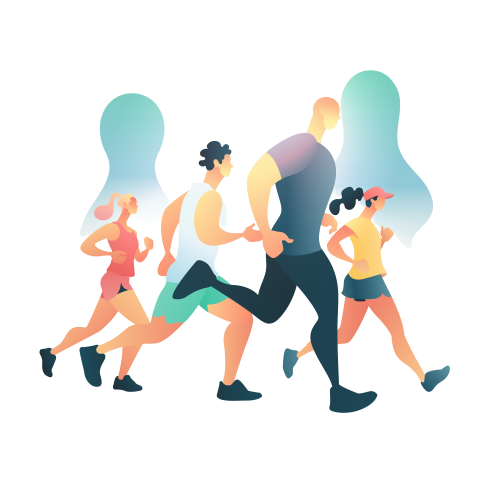

서비스 소개
우리와 함께 시작하세요
'쪼끼쪼끼'와 함께라면 건강한 변화를 실현할 수 있습니다.
운동을 통해 몸과 마음을 더 강하게 만들며 더욱 긍정적인 삶을 추구해보세요.
우리의 목표
'쪼끼쪼끼’는 건강을 중요하게 생각하는 학생들을 위한 프로젝트입니다.
건강한 습관을 형성하고 유지하는 것은 중요합니다. 운동은 이러한 습관을 시작하는 첫걸음이죠.
우리는 당신의 일상에 움직임을 더하고 더욱 건강한 선택을 할 수 있도록 돕습니다.
프로젝트 특징
- 함께 시작하기 : "쪼끼쪼끼"는 당신을 위한 운동 파트너입니다.
동일한 목표를 가진 다른 학생들과 함께 운동하며 서로를 격려하고 도와줄 수 있습니다.
- 다양한 활동 : 몸을 움직이는 방식은 다양합니다.
다양한 플레이를 제공하여 흥미와 체력에 맞는 활동을 찾을 수 있도록 도와드립니다.
- 운동 습관 : ‘쪼끼쪼끼’는 올바른 운동 방법과 습관 형성을 돕습니다.
강한 운동 습관은 미래의 당신을 위한 투자입니다.
